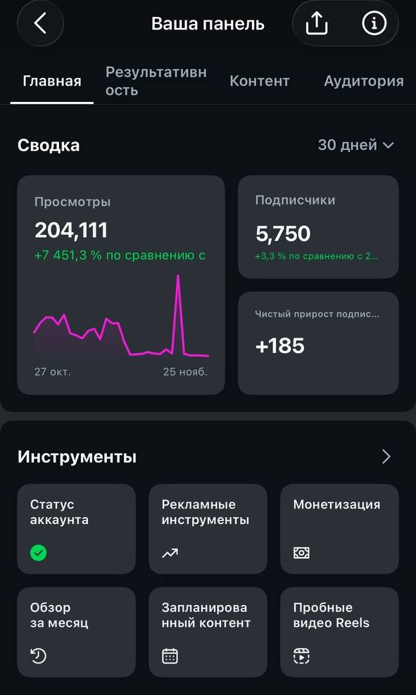
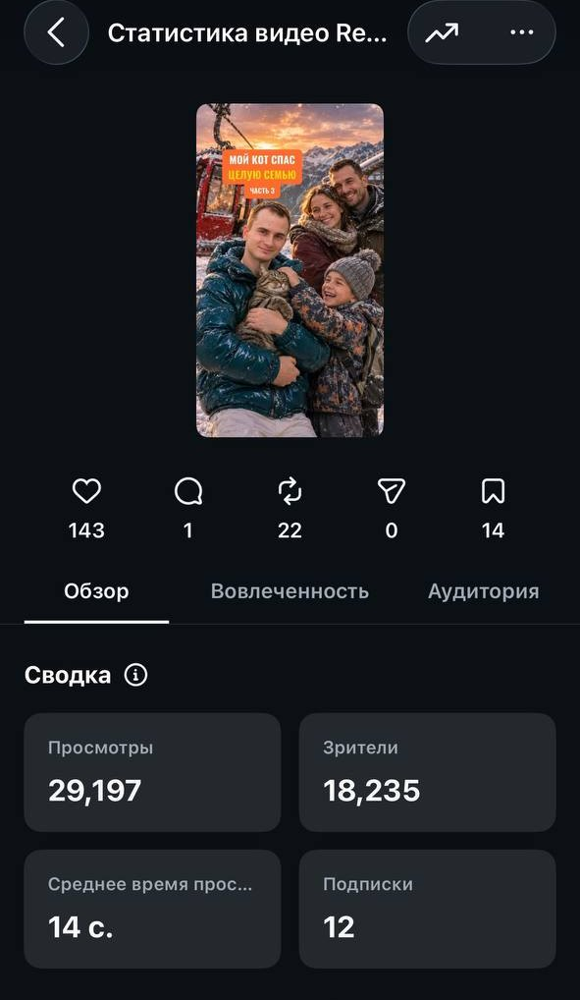
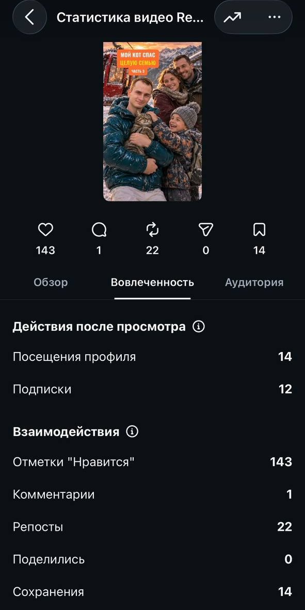

Кейс · Контент-завод на ИИ
Контент-завод для Instagram и YouTube
ИИ-система сама изучает конкурентов, пишет контент, снимает цифрового двойника эксперта и ставит публикации в расписание. Эксперт только согласует. За месяц аккаунт, который почти никто не смотрел, набрал 204 тысячи просмотров.
(+7 451% к прошлому периоду)
До этого в среднем ~100
/ 01
Задача
Аккаунт есть, а смотрят его около ста человек на ролик.Точка старта
У эксперта онлайн-школы был Instagram, который фактически не работал: ролики набирали около 100 просмотров. Вести его самому некогда, команды на контент нет.
Зато было понимание, на кого равняться: эксперт сам назвал блогеров, чей контент ему нравится. Нужна была система, которая регулярно выпускает контент в его стиле и его голосом и не требует его времени каждый день.
/ 02
Как устроен завод
Вся работа идёт в одном проекте Claude Code. Нейросети и аккаунты заказчика подключены в браузере, Claude Code сам переходит между ними.
-
00
Фундамент
До старта собрали три документа: Tone of Voice эксперта, анализ целевой аудитории и его оффер. Всё, что дальше делает система, опирается на них. Поэтому контент звучит как эксперт, а не «как нейросеть».
Claude Code -
01
Разведка у конкурентов
Claude Code сам заходит в Instagram блогеров-ориентиров, находит ролики, которые залетели, и разбирает, почему: темы, хуки, форматы.
Claude CodeInstagram -
02
Контент-план
Черновик плана готовится в ChatGPT, затем Claude Code дорабатывает его под находки разведки и Tone of Voice. План согласовываю я.
ChatGPTClaude CodeСогласование -
03
Сценарии и тексты
Сценарии роликов, тексты каруселей, описания и закреплённые комментарии. Claude проверяет их до производства, затем сценарии согласовываю я.
ClaudeСогласование -
04
Производство
Ролики с цифровым двойником эксперта в HeyGen и озвучка его голосом в ElevenLabs. Для YouTube делаются отдельные, уникализированные версии роликов.
HeyGenElevenLabs -
05
Сборка и проверка
Готовые ролики, карусели и тексты раскладываются по папкам на компьютере. Каждый ролик я смотрю перед публикацией.
Claude CodeПроверка -
06
Публикация
Claude Code сам ставит публикации в отложенный постинг Instagram: Reels или карусель, описание и закреплённый комментарий. Уникализированные версии роликов уходят на YouTube.
InstagramYouTube
Меньше, но точнеерешение, принятое по ходу работы
Заказчик хотел 8 единиц контента в день. Но по ходу работы стало видно: когда публикаций так много, они отбирают охват друг у друга.
Поэтому объём снизили и разделили на два потока: основная сетка для подписчиков и пробные Reels, которые Instagram показывает только новой аудитории.
- Было в плане
- 8 в деньвсе в основную сетку
- Стало
- 2–3 + ~3 в деньосновная сетка + пробные Reels
/ 03
Результат
Скриншоты статистики из аккаунта заказчика, период 27 октября – 25 ноября.



Имя и аккаунт заказчика не раскрываются по договорённости.
/ 04
Что это даёт
Аккаунт живёт без вас
Контент выходит каждый день, а эксперт тратит время только на согласование.
Ваш голос и стиль
Цифровой двойник, клон голоса и Tone of Voice: подписчики видят эксперта, а не шаблон.
Темы, которые уже сработали
План строится на том, что залетело у конкурентов, а не на догадках.
Две площадки сразу
Instagram и YouTube получают контент из одного производства.
Хотите такой контент-завод?
Расскажите о своём аккаунте и нише. Я отвечу в Telegram и предложу, как собрать систему под вас.